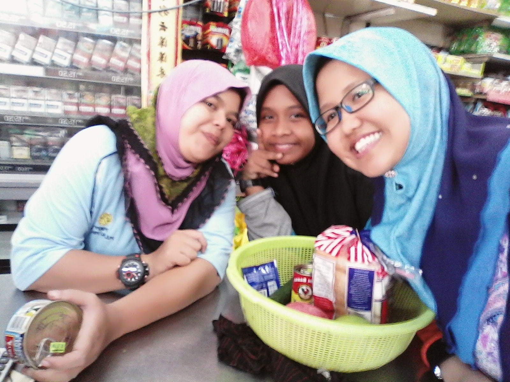
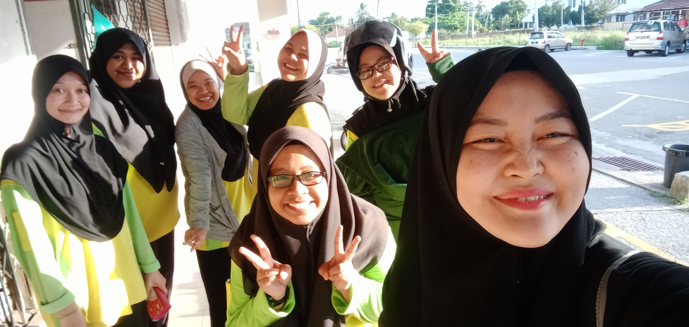
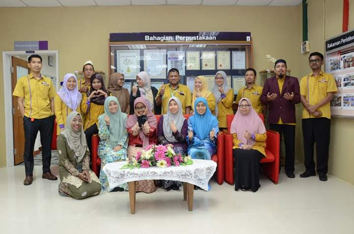
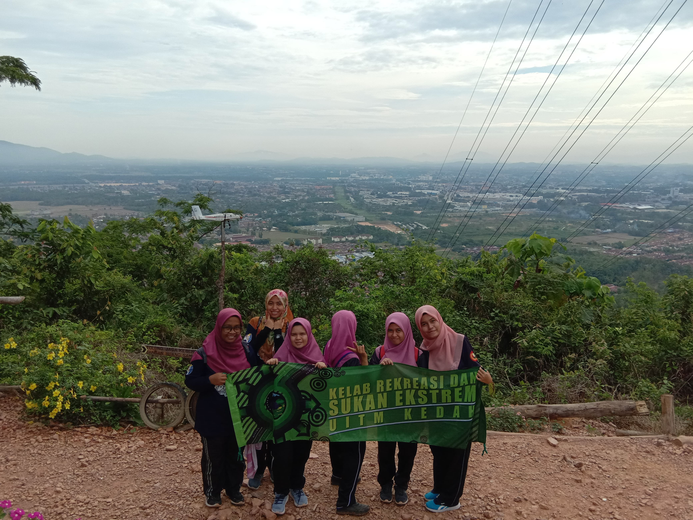

I had the experience of being a cashier after completing my final exams at SPM 2015. I worked part time as a cashier at a small supermarket for 6 weeks during Chinese New Year celebration. This is my first time experience working with people. The owner of this supermarket is Chinese. So, this is so tough for me to work with people other than Malay people and in addition this is my first experience working. Working as a Cashier has given me a lot of experience in how hard it is to earn money on my own

I had the experience of being a promoter after completing my final exams in STPM 2018. I worked part time as a promoter in a fabric shop for 2 months before continuing my studies at UITM KEDAH. While working at Arked Man I was assigned the task of cutting fabric. This gives me experience and patience in dealing with various customer requests. The shop belongs to malay people and not only offers a wide variety of fabrics but also items to go to Mecca, or school supplies as well as a variety of traditional clothes. I feel very comfortable working here as I have been able to add contacts from staff of different ages and they are very sporting in my presence.

I have internship experience at UITM PERAK library. I had an internship here for 6 weeks. For 6 weeks I gained a lot of experience from my internship. I was assigned assignments in every unit in the library. Along the work that given the staff at there so patience and not arrogant to entertain my questions. They are very sporting and kind to treat me plus have a staff who willing treat my meals. I chose UITM PERAK because its location is not far from where I live. I also had the experience of commuting a motorcycle from UITM PERAK to my home. Of couse that is so tired but i am so happy can have an experience like that

Last but no least, I had an experience to go hiking in Bukit Semarak, Kedah. This is my first experience with this hiking activity. It gave me a great experience of how exhausting this hiking activity is. Along the way to the top of the location is steep and need to be careful. But after reaching the top of the hill the happy was unimaginable. In addition, we get a great view of the beautiful scenery while on the hill. In addition, I have also found that cooperation between friends is very important during this hiking trip as the safety of each other is important to keep the trip going smoothly.
HOMEPAGE
"This Website is develop for IMD311(IM120). Any information or material are used for educational purpose only"